Lucid SND Parade
Saudi National Day activation · نتحرّك نحو المستقبل
نتحرّك نحو المستقبلرؤية تلهم الطريق
A vision in motion across the Kingdom. The line turns progress from an idea into something you can watch drive past.
A fleet, and a nation, moving forward
The concept works on two levels. Physically, a Lucid fleet journeys across Saudi Arabia. Symbolically, it mirrors a national vision moving forward through ambition, infrastructure and advanced manufacturing, ending at AMP-2, Lucid's factory in the Kingdom.
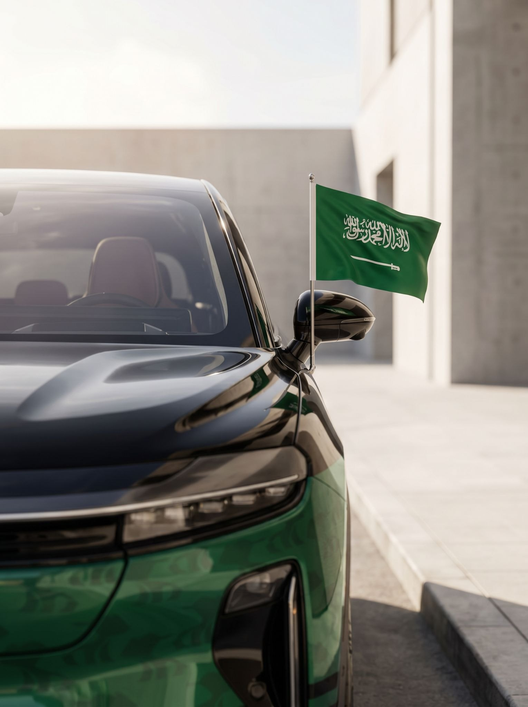
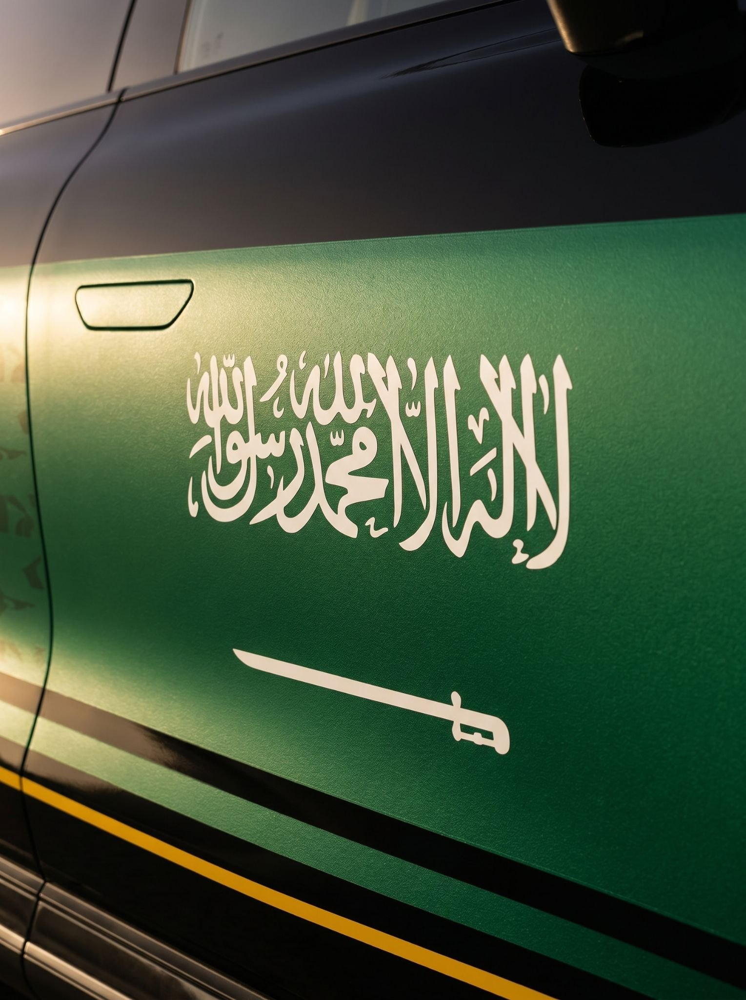
Khobar to AMP-2
The road itself carries the story. With every stop the fleet grows, until the journey peaks where the future of mobility is being built.
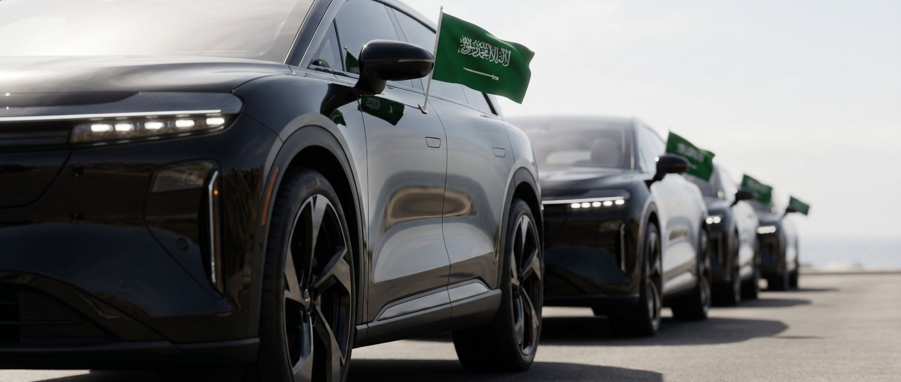
The first vehicles set the journey into motion.
The fleet expands: scale, ambition and momentum.
Movement, culture and energy build toward the finish.
Where advanced manufacturing is shaping what comes next.
Signal, move, reveal
Three phases build from curiosity to pride across the four weeks before National Day.
Something is moving across the Kingdom.
- Teasers: lights waking, reflections, wheels moving as one, Saudi green details
- Fleet sightings on highways and desert roads
- Influencers tease it without context
One synchronized journey crossing the Kingdom toward the future.
- City themes: Khobar begins, Riyadh scales, Jeddah brings rhythm
- Behind the scenes: wraps, drone rehearsals, charging, AMP-2 prep
- Sound-led edits from motor tones, charging clicks and Saudi musical layers
The future is no longer imagined. It is being built here.
- Hero film of the full journey, Khobar to AMP-2
- Cities connecting through synchronized movement
- Final drone formation of the Saudi flag or palm at AMP-2
Four ways to wear the flag
Four livery routes for the Lucid Air and Gravity, each tested on the convoy, from full Saudi green to a sharp black-and-green split.
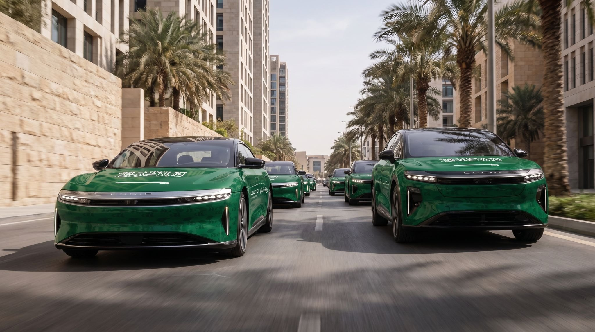
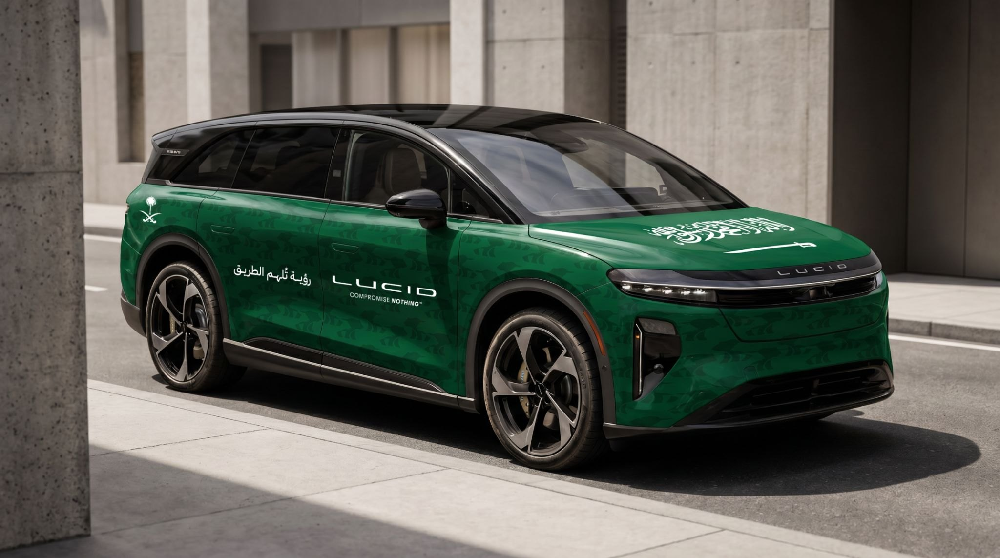
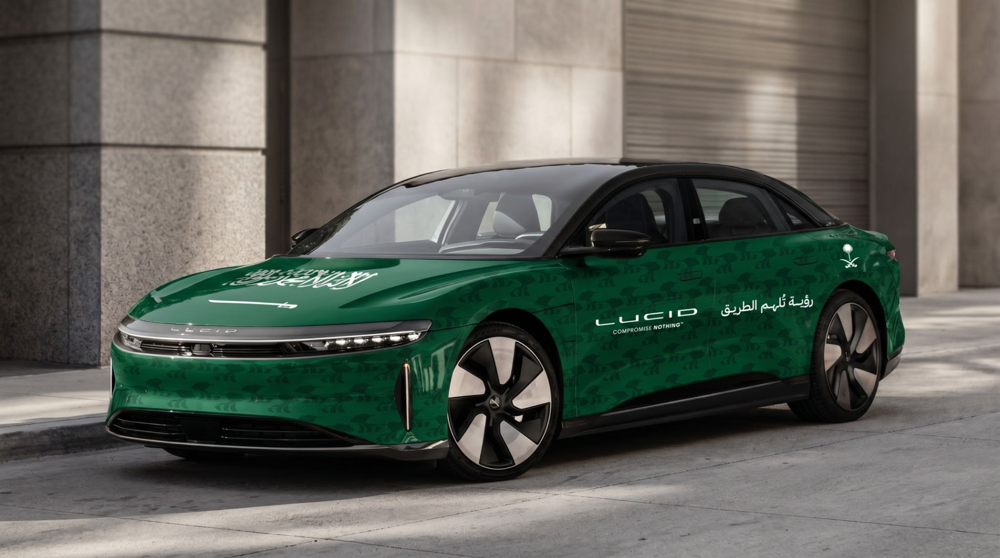
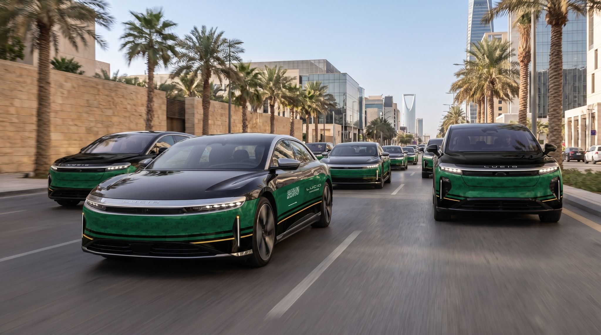
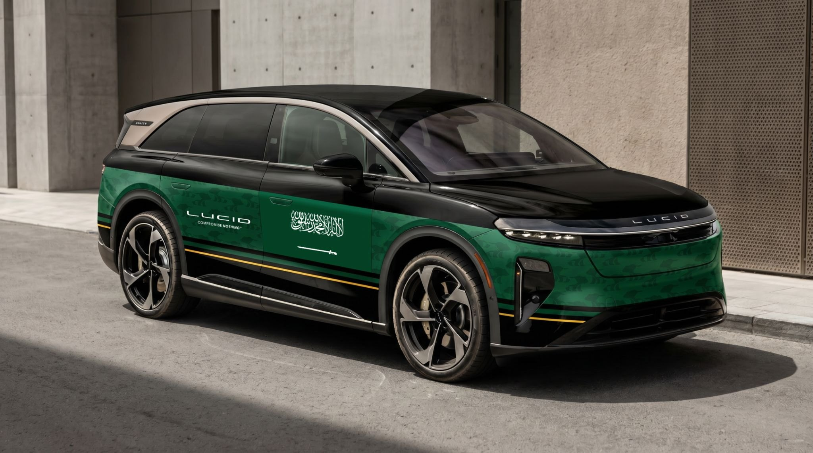
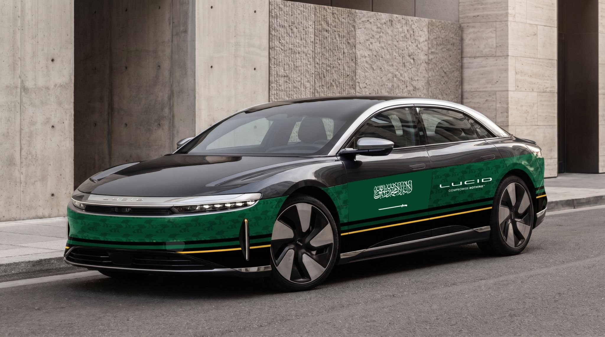
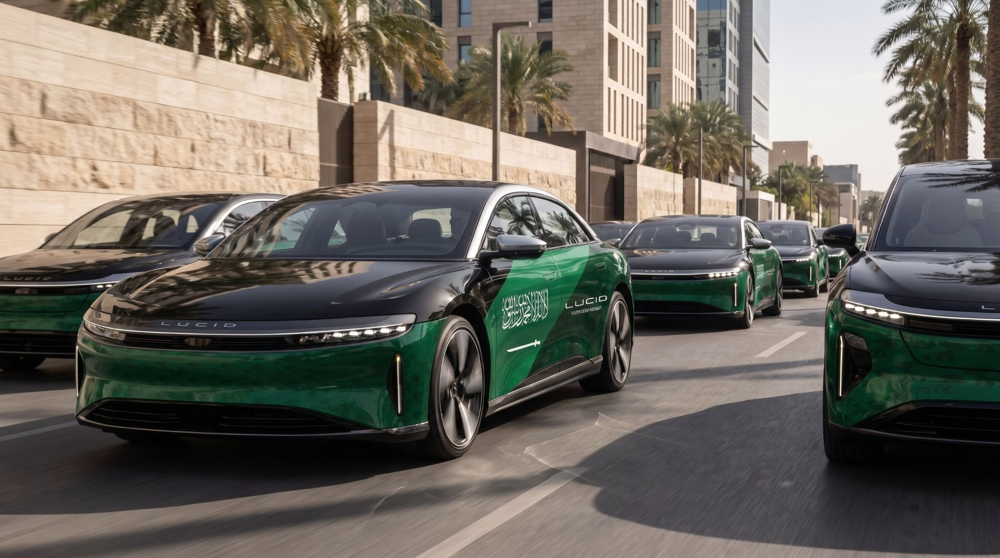
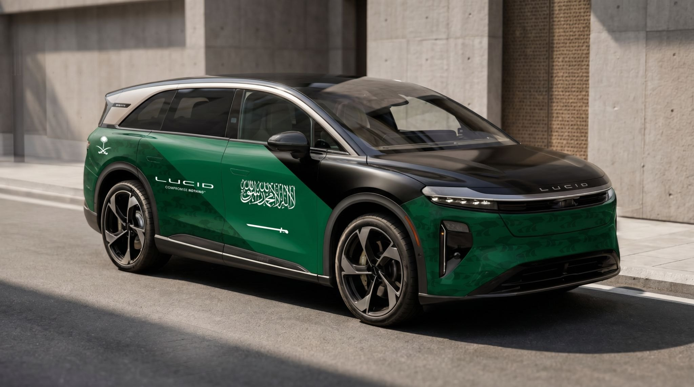
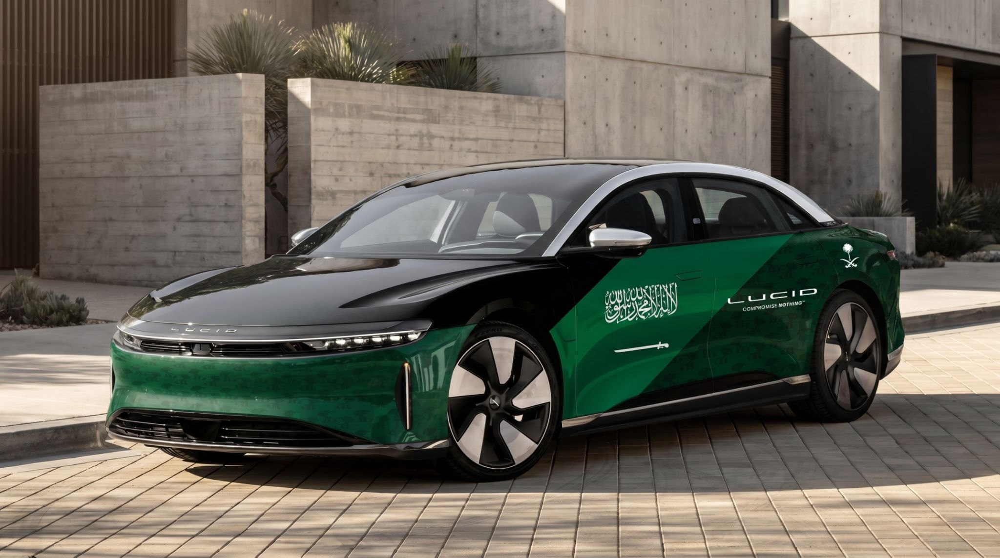
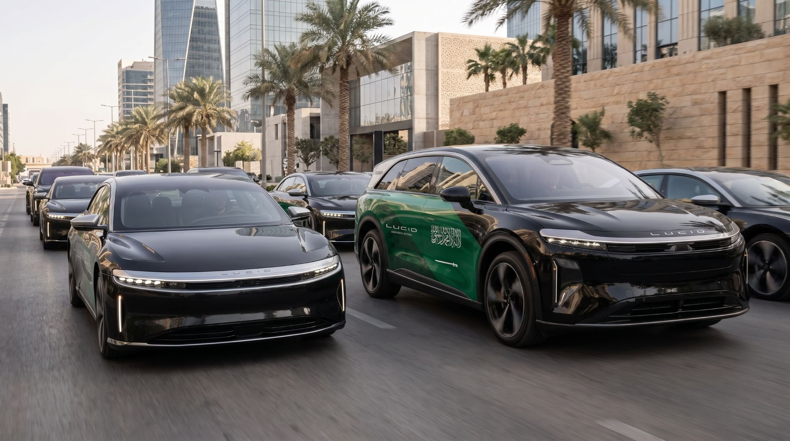
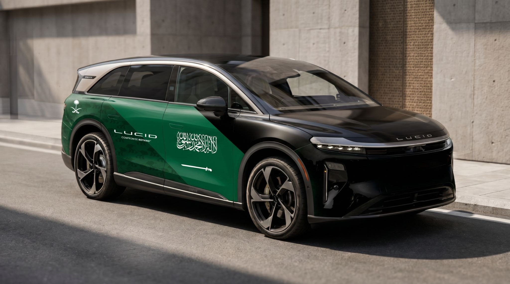
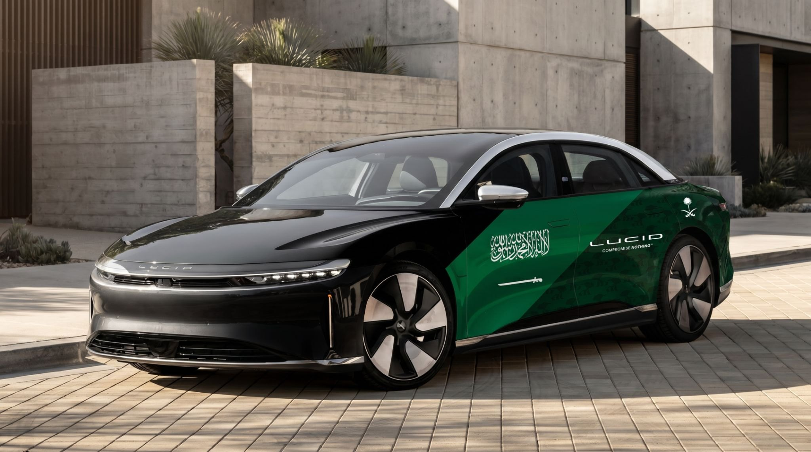
A journey that grows every year
Built as a platform, not a one-off: the route, the partners and the story can expand with Lucid's presence in the Kingdom.
AlUla, Tabuk, Hail, Abha and Jazan join the route, year after year.
Saudi artists, musicians and filmmakers reinterpret the journey each year.
The route links Lucid Destination Chargers into the Kingdom's mobility story.
Convoy arrivals become public shows with synchronized light and installations.
Each edition documents the next milestone of Saudi advanced manufacturing.
Live convoy tracking, interactive maps and a short-form documentary series.
The future
is being built here.
From Khobar to AMP-2, one fleet turns a national vision into movement people can see, follow and feel part of.